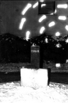

Речники
Художественное объединение Клуб Речников. Представляет - навигатор в художественной жизни Петербурга - газету «СусанинЪ» !
Художественное объединение Клуб Речников. Представляет - навигатор в художественной жизни Петербурга - газету «СусанинЪ» !
Участники Т. Абрамов, Р. Грузов, С. Макаров, Е. Остров, М. Полещук, М. Бородина
Описание действия: Во дворе особняка был установлен куб из черного льда, на него была помещена могильная плита с именем Роман. Гостям роздали книги Сорокина и шампанское, открылись двери в зал, где играл струнный оркестр. Следующие залы открывались постепенно, публика проходила к ресторану, помещение которого было разделено на две части старинной стеклянной перегородкой. Двери в сам ресторан оставались закрыты, за стеклянной стеной стояли ультрафиолетовые прожекторы, придавшие белым скатертям на пустых столиках и мраморной скульптуре интенсивное голубоватое свечение. Гости, которых насчитывалось около двухсот человек, оказались сжатыми в маленьком баре, причем задние ряды приперли передние вплотную к стеклу. В бар были вынесены поросята, осетрина, водка и черная икра; приборы поданы не были, но гости оживленно ели руками, разглядывая огромное залитое светом пустое помещение перед собой. Речиники, спрятавшиеся в затененных участках большой ресторанной залы сообщали друг другу своим наблюдения за москвичами. Впоследствии презентация была упомянута в нескольких московских изданиях как несомненно удачная, а ряд сценарных решений – в том числе постепенно открывающаяся анфилада и подсветка мрамора прожекторами ПРК – стали регулярно применяться на различных мероприятиях подобного рода.

Совершение обрядов церемоний по установленному порядку и правилам.